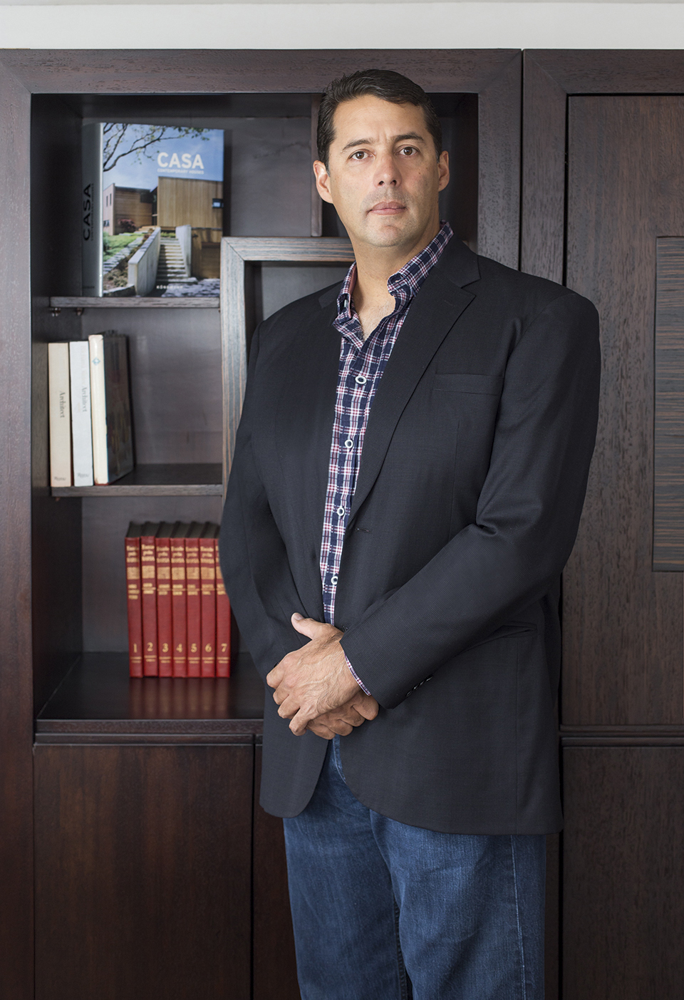
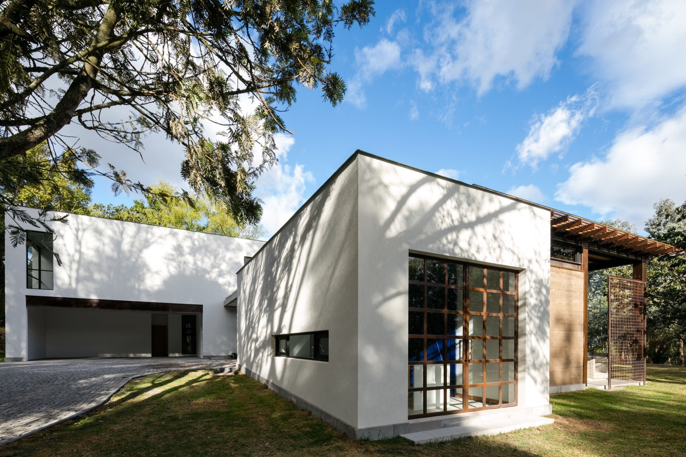

Juan Pablo Ribadeneira Mora si laurea in architettura nel 2002 al Savannah College of Art and Design, negli Stati Uniti. Nel 2003 consegue un master in architettura sempre presso il Savannah College of Art and Design. Nel 2010 rinnova la sua laurea professionale in architettura. Dall'agosto 2003 al marzo 2016 è a direzione della progettazione architettonica dello studio Ribadeneira FS Constructora. Sempre in questo periodo lavora come architetto indipendente. Dal 2006 al 2016 svolge anche un'attività da sviluppatore immobiliare. Dall 2005 al 2010 è, inoltre, azionista presso Coteway Cia. Ltda. azienda che progetta e produce mobili in legno.
 Diversi e ambiziosi sono i progetti fin'ora realizzati, di cui la maggior parte per privati. Sono ottantanove i progetti da lui disegnati e ottantuno di questi sono stati realizzati. Di seguito alcuni di essi.